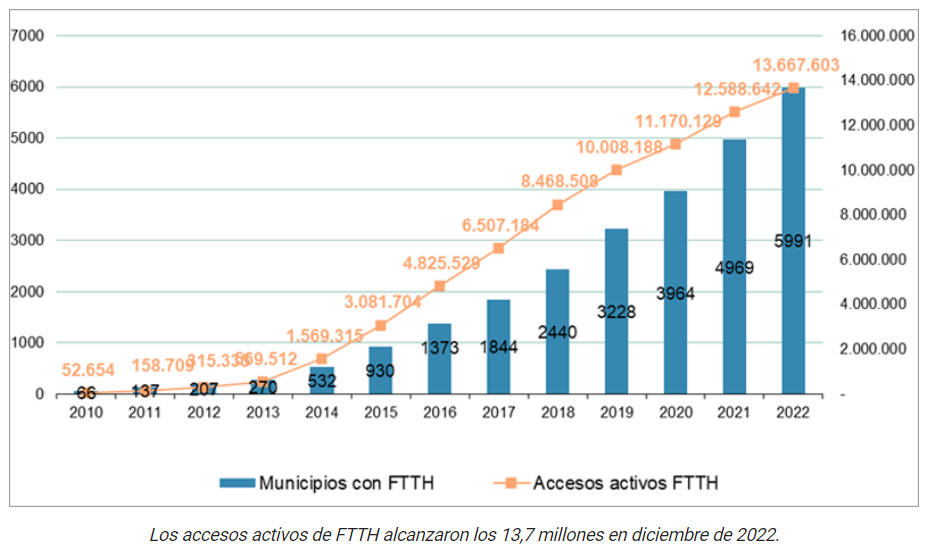
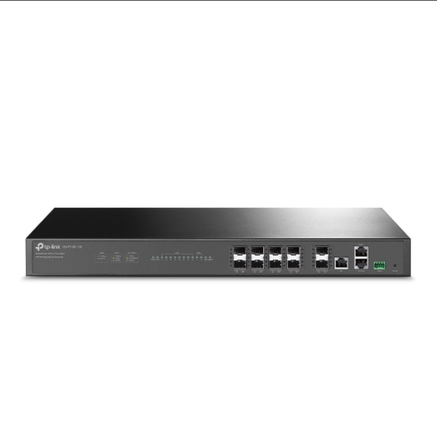
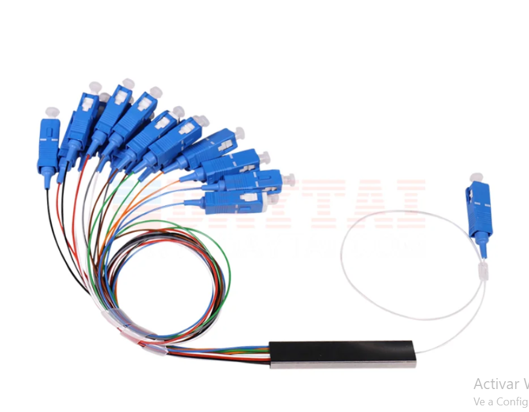
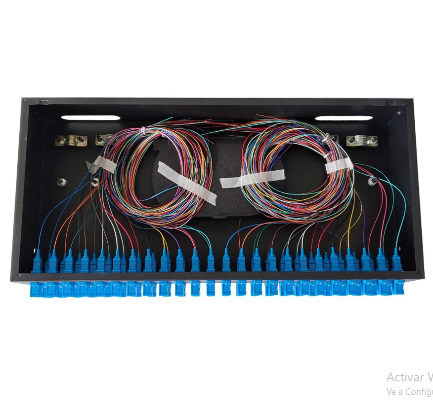
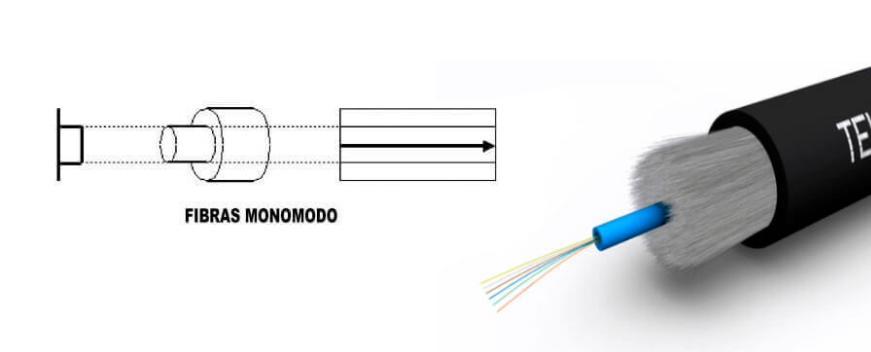
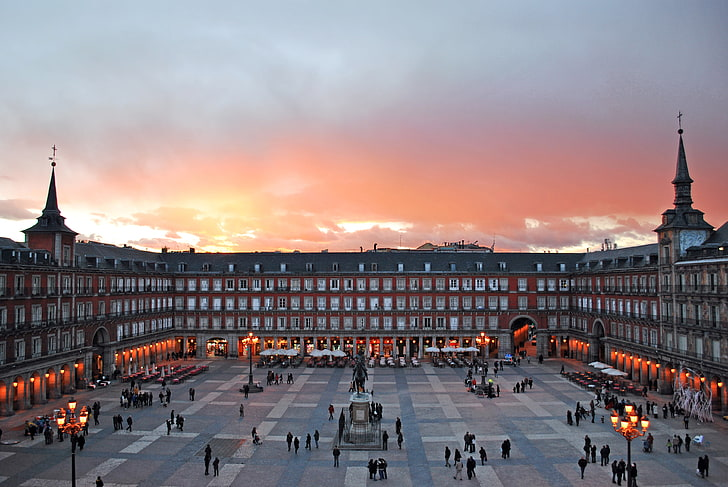

Las redes GPON están compuestas por diferentes equipos para llevar la conexión a la red y a Internet por la fibra óptica. Es un estándar de tecnología de acceso a las telecomunicaciones que utiliza una misma instalación de fibra óptica para funcionar y dar servicios de voz, datos y TV de alta velocidad, con una velocidad superior a 1GBps. En un entorno digital en constante evolución, la demanda de ancho de banda y la necesidad de una conectividad robusta están en aumento. En este contexto, la fibra óptica GPON se presenta como una solución tecnológica de vanguardia que ofrece velocidades de Internet ultra rápidas, baja latencia y una infraestructura capaz de satisfacer las necesidades presentes y futuras de comunicación. Esta red de fibra óptica no solo mejora la calidad de vida de los residentes, sino que también impulsa el desarrollo económico al proporcionar una base sólida para las empresas y la innovación tecnológica.
Implementación de la fibra óptica en España
España lidera la implantación de la fibra óptica en Europa, con más de 8 millones de hogares conectados a las redes de nueva generación. Dentro de los países de la Organización para la Cooperación y el Desarrollo Económicos (OCDE), solo Japón y Corea del Sur están por encima. La fibra óptica representa más de la mitad del mercado de banda ancha fija en nuestro país, muy por encima de otras tecnologías como el ADSL. Y es que la migración hacia la fibra óptica en España es la mayor del continente, muy por encima de Francia, Italia, Alemania y Reino Unido. La Comunidad de Madrid fue la primera región española donde se implantó la fibra óptica, en el año 2005, de la mano de la empresa Telefónica. No superaba los 50 mbps y se probó por primera vez en el barrio de La Latina en la capital, y en la localida de Pozuelo de Alarcón. Después de estas primeras pruebas, hubo que esperar otros tres años para que la fibra óptica empezara a comercializarse definitivamente en nuestro país. El resto de Europa ya estaba muy avanzada en la implantación de esta tecnología, y parecía que España se quedaría rezagada, pero el mercado ha evolucionado de forma espectacular en poco más de una década.
La fibra óptica hasta el hogar alcanza los 70,5 millones de accesos en España a finales de 2022 La fibra óptica hasta el hogar alcanza los 70,5 millones de accesos en España a finales de 2022
La Comisión Nacional de los Mercados y la Competencia (CNMC) ha publicado los datos estadísticos sobre los servicios de banda ancha y despliegue de redes de nueva generación (NGA) en España con detalle geográfico del año 2022 (ESTAD/CNMC/001/23). Según los datos, a finales de 2022 se alcanzaron 70,5 millones de accesos de fibra óptica hasta el hogar (FTTH) desplegados (+12,6%), frente a los 62,6 millones del año anterior.
{kind=link}
El proyecto incluye el despliegue de fibra óptica desde 7 diferentes nodos ubicados en la ciudad de Madrid. La red se dividirá en celdas para facilitar la gestión y el mantenimiento.
Equipos necesarios:
🔴 Nodo central de fibra óptica
🟢 Splitters de fibra óptica
🟡 Cables de fibra óptica
🟣 Herramientas de instalación
Nodo central de fibra óptica
Es un dispositivo que sirve como punto de conexión para la red de fibra óptica. El nodo central del proyecto admitirá hasta 16 puertos de entrada y salida, lo que permitirá conectar hasta 16 splitters de fibra óptica

{kind=link}
DSplitters de fibra óptica
Un splitter, también conocido como divisor óptico, es un dispositivo que toma una señal y la divide en varias señales; estos suelen usarse en redes de distribución de video, o en redes FTTH. Pueden tener N salidas, que si bien, tienen menos potencia que la señal original, permite que llegue a más usuarios

{kind=link}
ODF
El ODF es un dispositivo que organiza y conecta los cables de fibra óptica

{kind=link}
Fibra óptica
La fibra óptica es una guía de onda en forma de hilo de material altamente transparente diseñado para transmitir información a grandes distancias utilizando señales ópticas. La fibra se fabrica a partir de sílice de muy alta pureza; con sólo 2 kg. de este material pueden fabricarse más de 40 kms. de fibra óptica.

{kind=link}
Bernabeu
- Nodo central de fibra óptica : Tp-link - Splitters de fibra óptica : Splitter-1x16 : Huawei, Orange, Vodafone, Movistar - Cables de fibra óptica : Cable-Fibra-Optica-10G-Monomodo : Huawei, Movistar

Palacio Real
- Nodo central de fibra óptica : 8 puertos GPON : Tp-link - Splitters de fibra óptica : Splitter-1x8 : Huawei, Orange, Vodafone - Cables de fibra óptica : Cable-Fibra-Optica-10G-Monomodo : Huawei, Movistar
{kind=link}
Museo Del Prado
- Nodo central de fibra óptica : 8 puertos GPON : Tp-link - Splitters de fibra óptica : Splitter-1x16 : Huawei, Movistar, Vodafone - Cables de fibra óptica : Cable-Fibra-Optica-10G-Monomodo : Huawei, Movistar
{kind=link}
Parque Del Retiro
- Nodo central de fibra óptica : 16 puertos GPON : Tp-link - Splitters de fibra óptica : Splitter-1x16 : Huawei, Movistar, Orange - Cables de fibra óptica : Cable-Fibra-Optica-10G-Monomodo : Huawei, Movistar
{kind=link}
Plaza Mayor
- Nodo central de fibra óptica : 8 puertos GPON : Tp-link - Splitters de fibra óptica : Splitter-1x8 : Huawei, Orange, Movistar - Cables de fibra óptica : Cable-Fibra-Optica-10G-Monomodo : Huawei, Movistar

{kind=link}
Puerta Del Sol
- Nodo central de fibra óptica Tp-link - Splitters de fibra óptica : Splitter-1x16 : Huawei, Vodafone - Cables de fibra óptica : Cable-Fibra-Optica-10G-Monomodo : Huawei, Movistar
{kind=link}
Templo Debod
- Nodo central de fibra óptica Tp-link - Splitters de fibra óptica : Splitter-1x8 : Huawei, Movistar - Cables de fibra óptica : Cable-Fibra-Optica-10G-Monomodo : Huawei, Movistar
{kind=link}